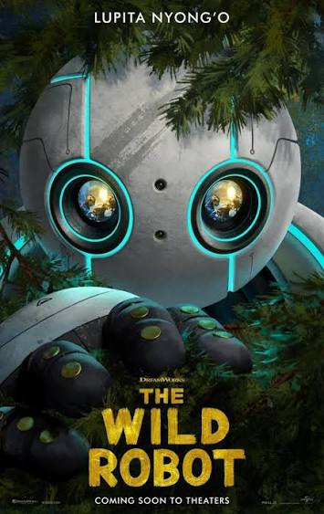
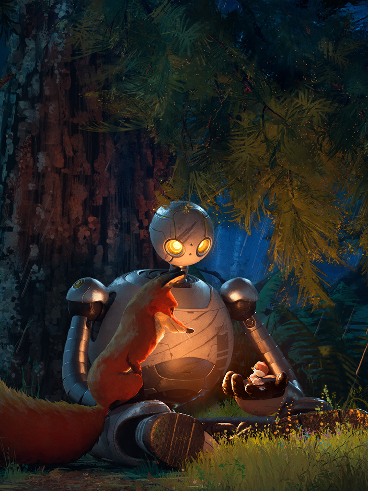

La historia trata sobre Roz, una robot que despierta en una isla llena de peligros a los que debe adaptarse. Después de un accidente, termina haciéndose cargo de una cría de ganso, lo que la llevará a aprender sobre la maternidad.
Una película sobre el amor de una madre.

La historia trata sobre Roz, una robot que despierta en una isla llena de peligros a los que debe adaptarse. Después de un accidente, termina haciéndose cargo de una cría de ganso, lo que la llevará a aprender sobre la maternidad.
Géneros: Ciencia ficción, drama y aventura
Año: 2024
Director: Chris Sanders
Duración: 102 minutos

| Actores de voz (inglés) | Personajes |
|---|---|
| Lupita Nyong'o | Roz |
| Pedro Pascal | Fink |
| Kit Connor | Brightbill |
Robot salvaje es una película estrenada en 2024 por el estudio de animación DreamWorks. Recaudó aproximadamente 324,7 millones de dólares con un presupuesto de 78 millones.
La historia está basada en la trilogía de libros escrita por Peter Brown, concretamente en el primer libro, publicado el 5 de abril de 2016.